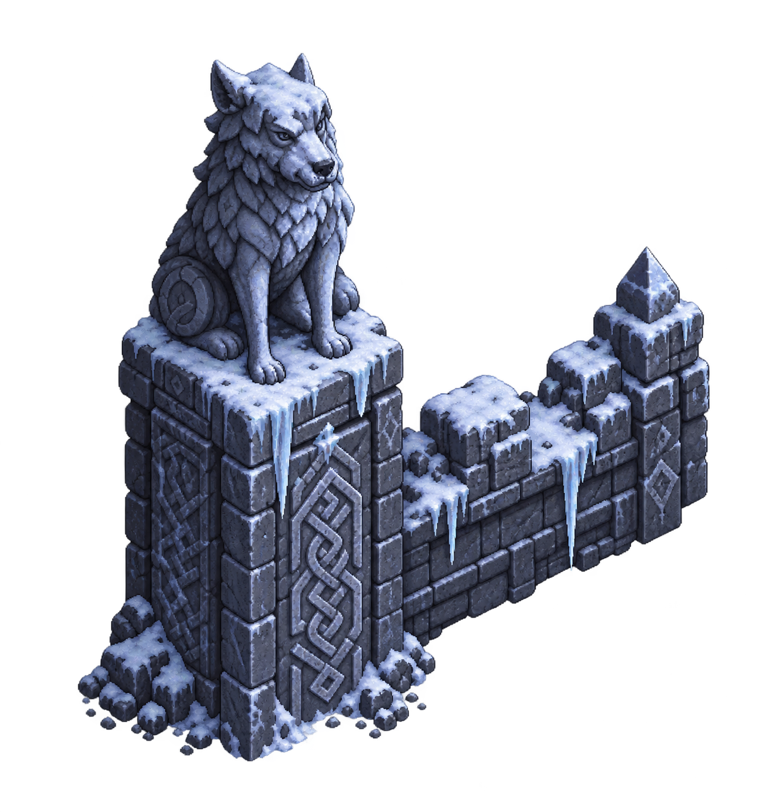
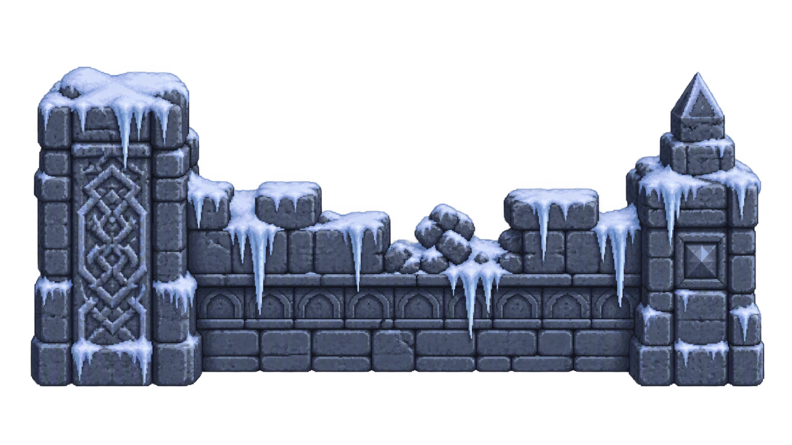
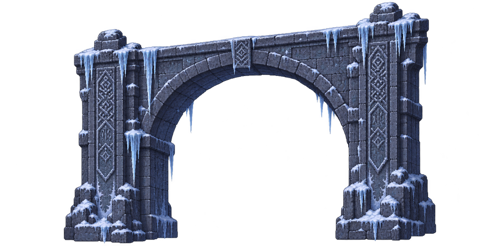
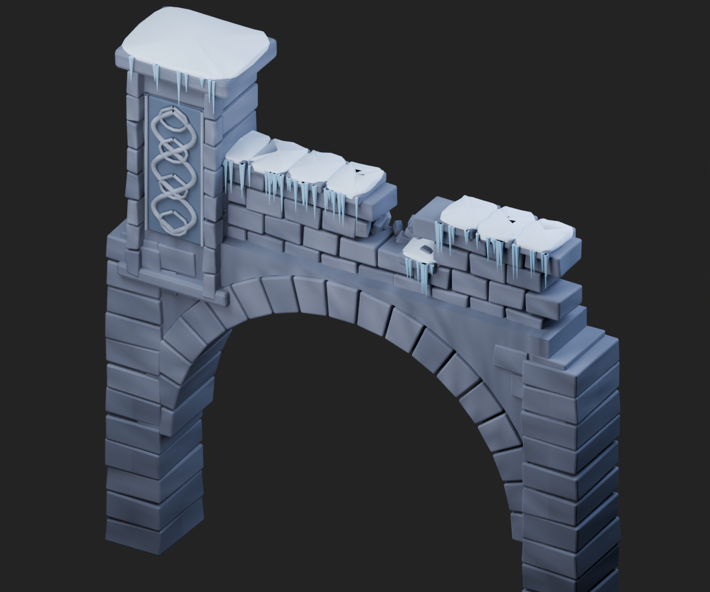

唯一美术基准

本轮内置图像生成 · 采用

尖耳、鬃毛、石刻与可见侧面更符合目标。运行时将柱和墙分区取样，柱脚与两侧承重墩绑定，不把整图随相机转动。
已有 Meowa 围栏 · 未采用

细节有基础，但主要是正面立面，缺少兽像和与当前相机匹配的侧面；周围还有较多半透明背景。不能靠缩放和拉伸补齐空间关系。
本轮桥拱支撑 · 采用

透明拱洞保留；绘制的桥顶接缝重新投到桥面高度，兽像柱按桥墩中心安放。
本地程序建模 · 淘汰

体积成立，但砌石过于规整、雕刻简单，缺少目标的美术密度。没有沿用其建筑造型。
本轮冰晶与火盆
这些是不同条件下已有结果的项目内比较，不能据此认定某个服务整体更好。Skill 是工作流程；最终采用由资源与实际画面决定。没有购买额度，也没有创建外部 Meowa / Meshy / Tripo 付费任务。